August Papers: Hallucinations, Quantisations and Test-Time Computations
If there's one thing you can count on from Graphcore Research, it's tireless enthusiasm for effective compute utilsation! Our favourite papers from August include:
-
Spectra, an open suite of 54 LLMs and 500+ intermediate checkpoints from 0.1B to 3.9B, spanning FP16 training, ternary training, and post-training quantisation to 3, 4, 6, and 8 bits. The proposed ternary architecture - TriLM - outperforms BitNet b1.58 models of similar size.
-
An investigation into two methods for allowing LLMs to improve task performance on challenging prompts by expending more test-time compute. As a result, the authors demonstrate compute-optimal scaling strategies to allocate compute on a per-prompt basis, and show that thoughtful increases in the test-time compute budget for a small model can be more effective than training larger models.
-
A training dataset derived from a Knowledge Graph where correct answers can always be known, enabling accurate measurement of hallucinations in LLMs. This facilitates an analysis of hallucincation rates and hallucaination detectability as training compute is scaled. So you see, we don't only think about compute!
I hope you enjoy these as much as we did. If you have thoughts or questions, keep the conversation going @GCResearchTeam.
We hope you enjoy this month's papers as much as we did! If you have thoughts or questions, please reach out to us at @GCResearchTeam.
Spectra: A Comprehensive Study of Ternary, Quantized, and FP16 Language Models
The key idea
An open-source LLM suite comparing models trained in 16-bit precision, post-training quantised models, and pretrained ternary models. The suite consists of models in the 99M - 3.9B parameter range trained on 300B tokens.
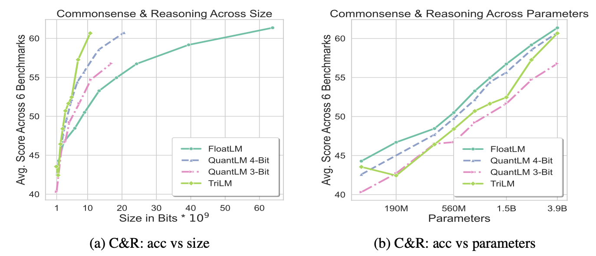
Background
Recent work on pretrained ternary models (see our March post!) has offered an exciting avenue for models trained in extremely low precision that can almost fully retain the accuracy of their higher-precision counterparts when trained from scratch. This is in contrast to the commonly-used quantisation techniques that take models trained in higher precision and compress them for inference. However, the trade-offs between the techniques have not been fully studied and understood.
Their method
In the Spectra suite, the authors train/quantise 54 models that are either:
- FloatLM: Llama-style standard transformer architecture trained in half-precision.
- QuantLM: Post-training quantised FloatLM using GPTQ (quantised to 3/4/6/8 bits).
- TriLM: Ternary model (values either -1, 0, or 1) similar to the BitNet b1.58 LM architecture.
TriLM
TriLM (similarly to the BitNet b1.58 architecture) uses ternary {-1, 0, 1} values for linear layer weights, with an additional floating point scale per weight tensor. Full floating-point representations of the values are kept during training and quantised during each forward pass: the scale is computed as the absolute mean of the tensor, and the value is quantised to the nearest ternary state after scaling. Additionally, when using weight sharding across devices, each device computes a scale for its own shard to avoid additional communication.
Results
The models were evaluated on commonly-used benchmarks covering commonsense and reasoning, as well as knowledge-based tasks. It was generally observed that TriLM outperforms the other models on per-bit performance, while the gap between TriLM and FloatLM/QuantLM on per-parameter performance decreases as the model size is increased.
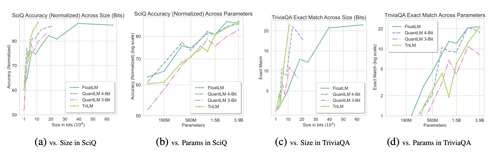
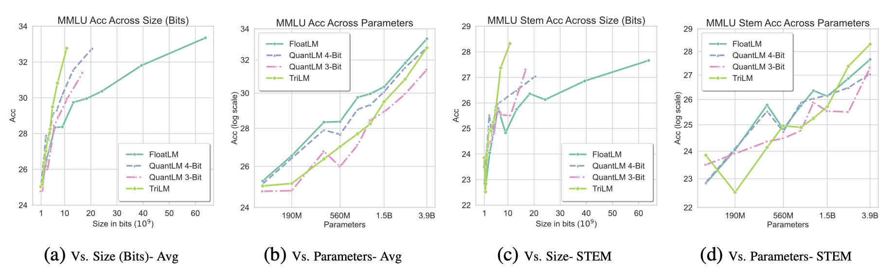
Takeaways
The original BitNet b1.58 paper showcased very promising results on training highly-quantised models without a significant performance degradation, which is why having open-source suites reproducing the results and comparing different architectures such as Spectra is invaluable for researchers looking into analysing and developing low-precision models.
Scaling LLM Test-Time Compute Optimally can be More Effective than Scaling Model Parameters
The key idea
When choosing between deployment of a small or large model, consider whether the compute saving made from choosing a small model can be reallocated to improving model outputs at runtime and still retain a net compute gain.
Their method
The authors consider how to reallocate compute along two axes:
1) Modifying the proposal distribution by augmenting context with additional tokens. To tie this to model compute (rather than independent sources of additional tokens like retrieval), they study self-critique, in which models augment their context with a sequence of incorrect answers to guide themselves towards the correct answer. This requires a bit of fine-tuning, using sequences of incorrect answers followed by correct answers as training data. At inference time, models may generate a correct answer in the middle of the sequence, so they pool all outputs for generating a final answer (e.g., take majority).
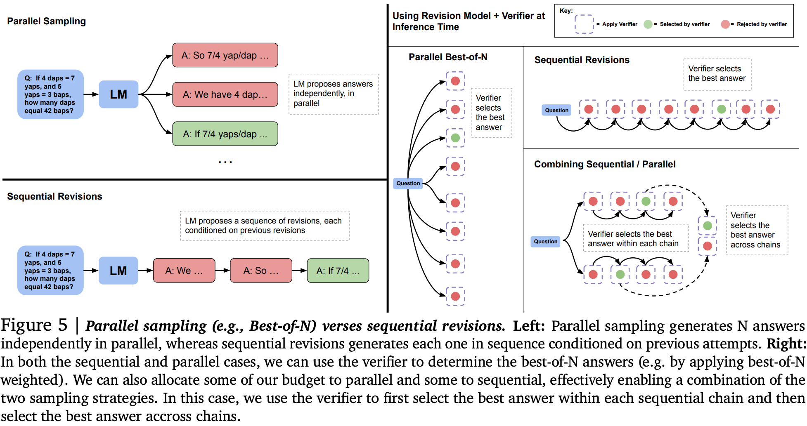
Example:
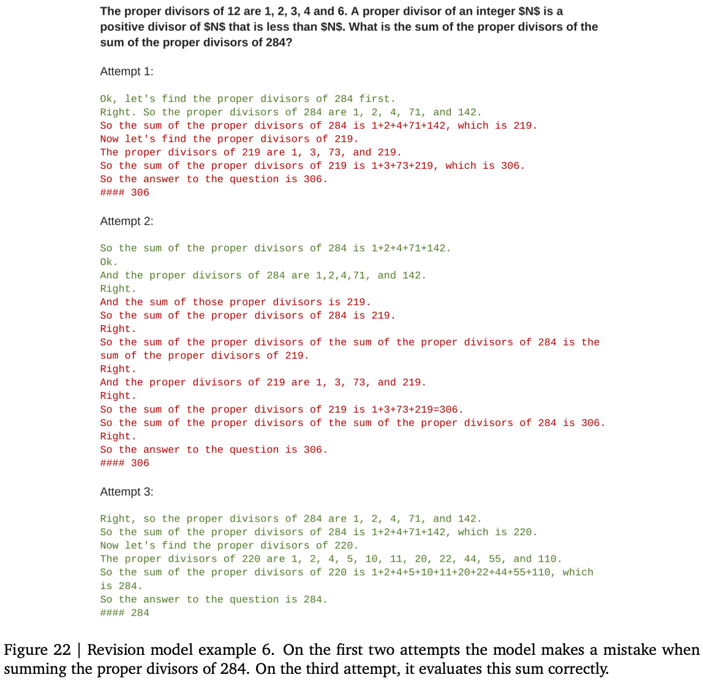
2) Improving the model output verifier with a reward model used to score each generation step in beam search decoding. They use beam search with lookahead as a means to parameterise a fixed compute budget, since number of beams (independent parallel searches), beam width (parallel search with a shared history), and lookahead steps (rollout of search path to evaluate beam at current step) can all be used to scale compute at inference time with many parallel and sequential executions of the model.
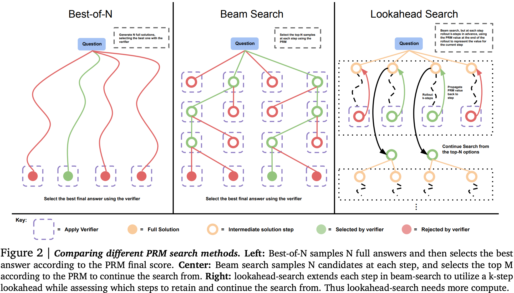
Example:
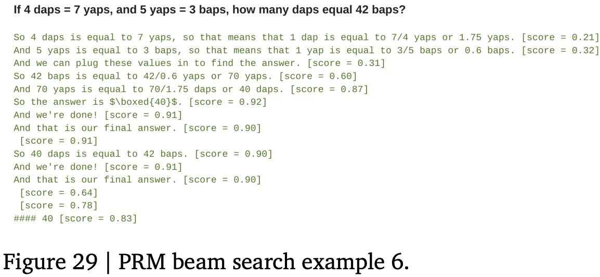
They evaluate each of these approaches independently on high school maths problems (MATH benchmark) binned into 5 separate difficulty brackets based on accuracy rate of a base LLM (PaLM-2).
Results
For each approach, they first define the "compute-optimal" strategy. This amounts to finding the right setting of sequential and parallel compute given estimated question difficulty (as measured by a learned reward model).
For improving verifiers with a learned reward model + beam search, they find that increasing the number of lookahead steps is worse than simply allocating more/wider beams, i.e, the overhead of lookahead didn't provide enough of a gain compared to expanding beam search. They also find for easier questions that there appears to be some evidence of reward-hacking, since increasing compute budget made accuracy slightly worse on the easiest questions than with lightweight strategies for verifying outputs. However, for medium difficulty questions, increasing compute budget improved accuracy, albeit from a low bar. On the most difficult questions where simple strategies completely failed, there looks to be a very marginal gain.
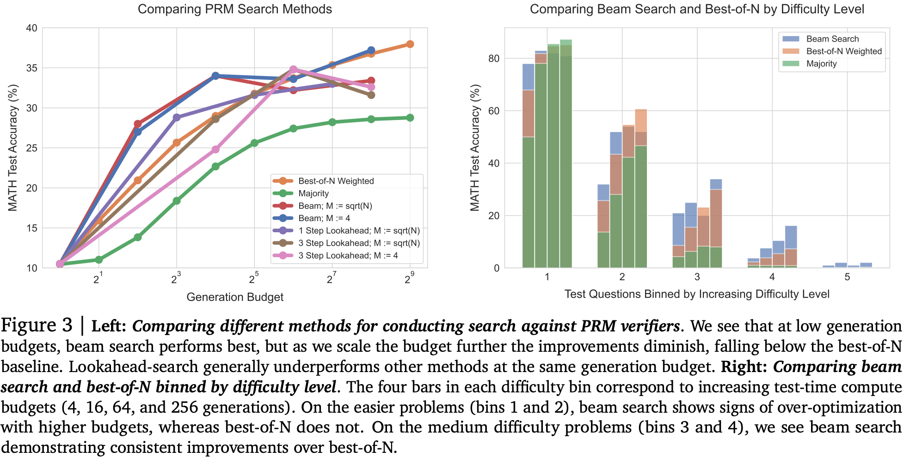
Balancing across these findings to produce a compute-optimal strategy picking the best settings for each compute budget, they show a 4x improvement at lower compute budgets, although this appears to saturate. Interestingly, using estimated rather than "actual" difficulty to pick strategy doesn't appear to harm accuracy much at all.
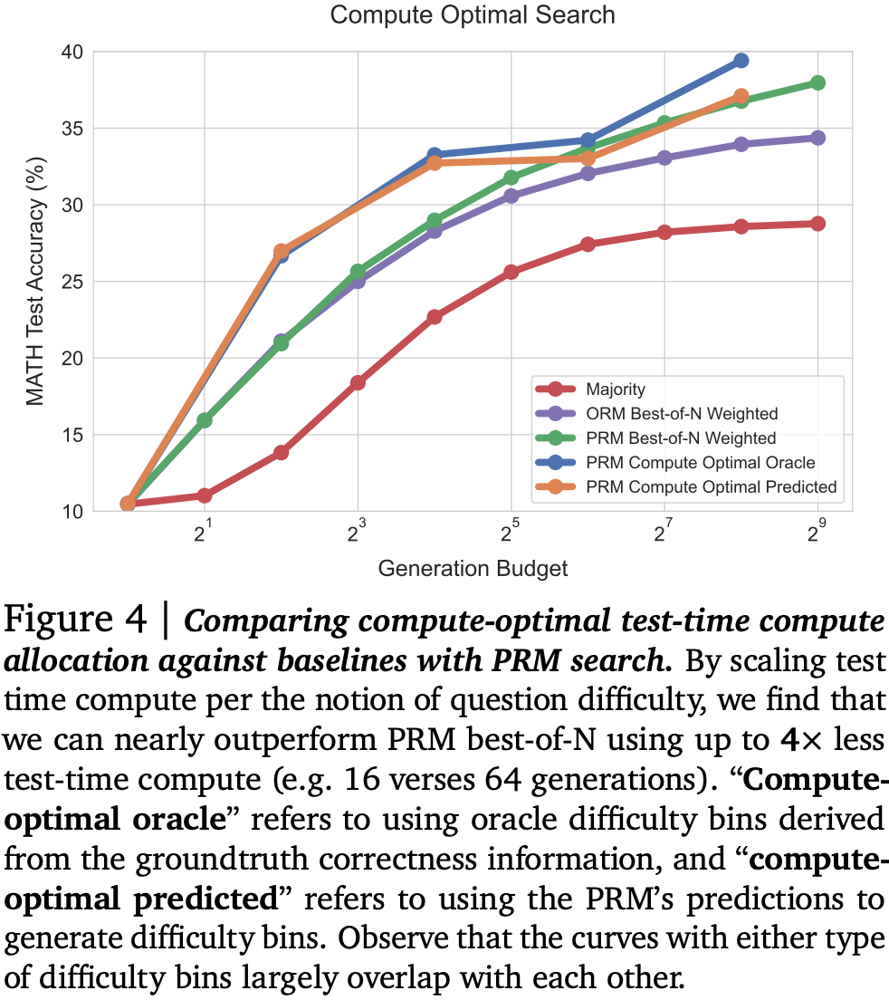
For improving the proposal distribution with sequential revisions they need to find the right balance between spinning up independent sequences of revisions in parallel, and increasing the length of the revision chain. They show that as compute budget increases, more compute should be allocated to generating sequential revisions. Indeed it looks like there might be an easily saturated benefit from generating multiple revision chains (expanding search space), but that the greatest improvement comes from following a chain further down the path (refining search path). Additionally, easy questions seem to benefit more from revisions, but harder questions benefit from a bit more coverage of search space.
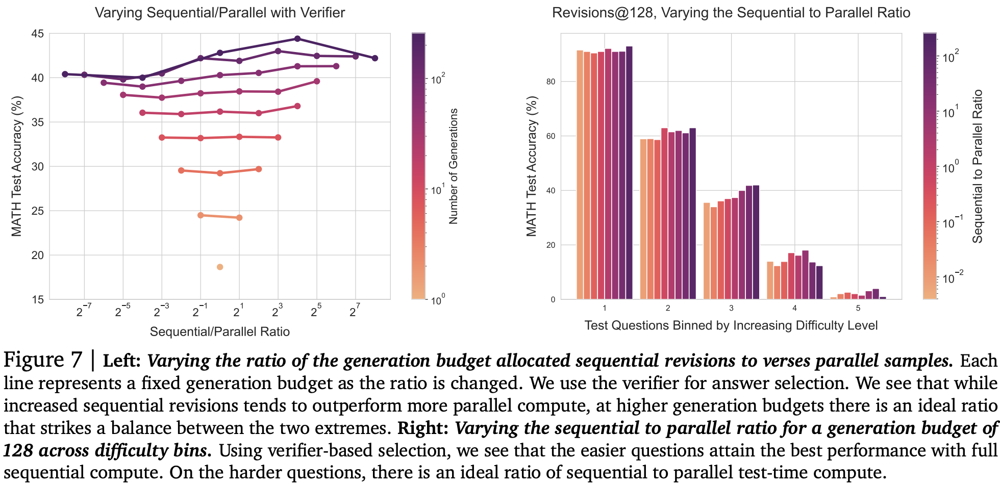
Once again they propose a compute-optimal strategy choosing the best settings for each budget and question difficulty. This time it appears that accuracy continues improving as budget increases.
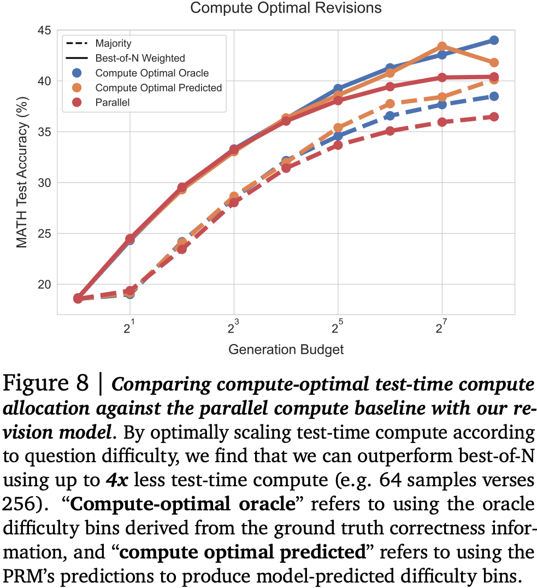
Finally, they examine the trade-off compared with using a larger pretrained model under three different assumptions for how long it would be deployed, i.e., whether the total number of inference token is much less than, similar to, or much greater than the total number of pretraining tokens. Firstly, there doesn't seem to be much benefit to just improving the verifier: using a larger pretrained model appears to win almost every time. However, allowing the model to revise answers does appear to help, at least in some cases. In particular, you can save compute at test time using a smaller model with sequential revisions for easier questions, especially when number of inference tokens is much less than the total number of pretraining tokens. As you tip the ratio in favour of more inference tokens, the difficulty bar appears to raise meaning fewer medium difficult questions obtain a compute saving from smaller model with revisions. For the most difficult questions, a larger pretrained model always works best. It appears there are diminishing returns for improving a model distribution without a more expressive model in the first place.
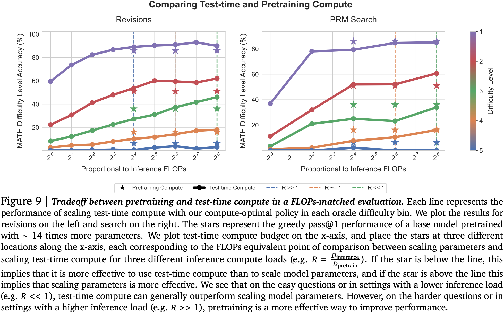
Takeaways
A question we have been asking for a while in the research team is how to strike the right balance between in-context learning and finetuning. This paper takes that a step further and also asks whether you should simply improve your pretraining recipe. Of course, in the real world you need to do both since you'll deploy your current model to the best of its ability before the next one is available. Even in this vastly simplified setting (no consideration of interaction with the myriad other ways to modify models during deployment: RAG, tool-use, quantisation, distillation), you can see some benefit to adding FLOPs at inference time.
Training Language Models on the Knowledge Graph: Insights on Hallucinations and Their Detectability
The key idea
One of the key challenges for large language models (LLMs) is the reliability of the model output. By strictly controlling the training data the authors investigate how hallucinations and the performance of hallucination detectors change with the size of the model and the dataset.
Background
Since LLMs are typically trained on vast amounts of data with unclear information content, and since natural language can be ambiguous, it is hard to decide which LLM output counts as hallucination. Knowledge graphs capture relational information in the form of (subject, predicate, object) triples, where subject and object are represented by nodes of the graph, and predicates correspond to directed edges.
Their method
To have full control over the information that the language model digests during training, the authors train decoder-only Transformers of different sizes to predict the object of triples of a knowledge graph. This approach guarantees that a model prediction can unequivocally be identified as correct or hallucination, depending on whether the prediction is indeed an object of (subject, predicate, ?) in the knowledge graph.
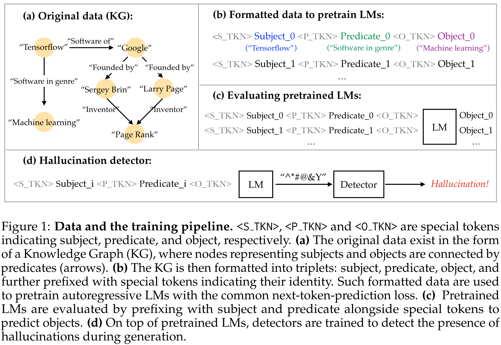
In this constrained setting, the occurrence of hallucinations can be analysed for different model scales, dataset fractions, and training durations. Furthermore, the performance of hallucination detectors can be measured for two different detection tasks: * sentence: Given the original (subject, predicate) pair and the predicted object, the detector judges if the object is hallucinated. * token: Given the embedding of a token from the LM, the detector judges whether it is hallucinated.
Results
Scaling behaviour of the hallucination rate
The proposed task relies heavily on the memorisation of facts during training, therefore the model performance on unseen data is generally quite weak and increasing the model size or the training duration hardly impacts the rate of hallucinations, with some signs of overfitting in the case of large models/many training epochs. In contrast, when testing on facts seen during training, a better memorisation performance can be achieved with larger models and a longer training duration resulting in a lower hallucination rate. Since, in contrast to typical datasets for LLM training, the KG dataset contains no repeated information, several (~20) training epochs are required for a low hallucination rate.
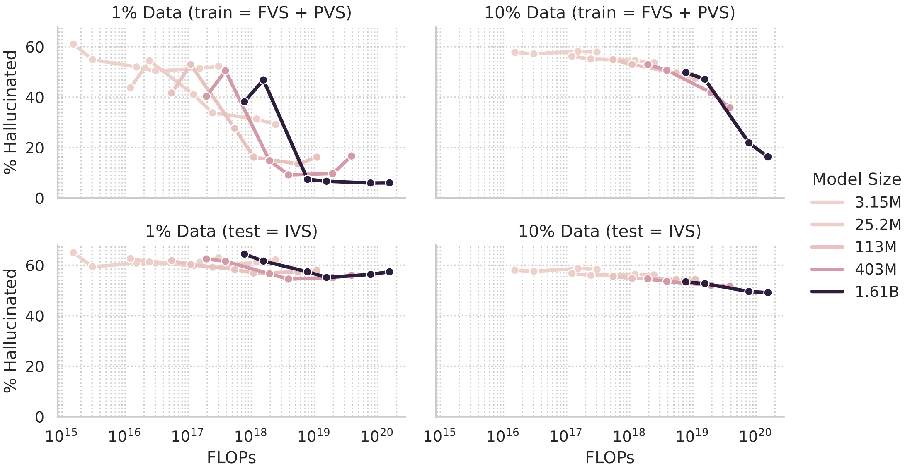
Furthermore, a tradeoff between precision (\(1 - \text{hallucination rate}\)) and recall (the proportion of objects that are generated at least once when multiple objects exist for a (subject, predicate) pair) can be observed when varying the sampling temperature: A low temperature reduces the rate of hallucinations but prevents the generation of some facts.
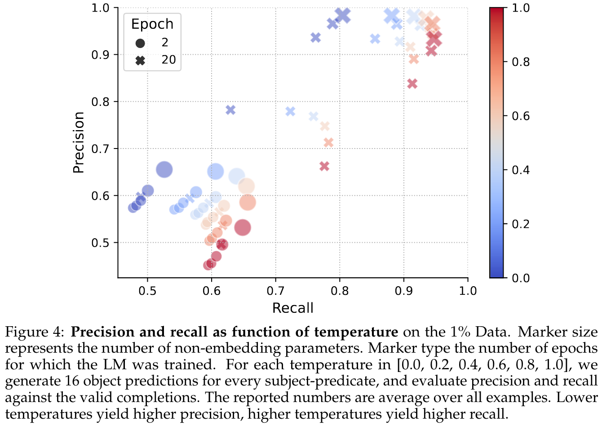
Hallucination detectors
When finetuning the pretrained LMs for hallucination detection, it can be observed that low hallucination rates impede the detectability of hallucinations. In particular, the detection of the remaining hallucinations of larger, longer trained models becomes increasingly hard.
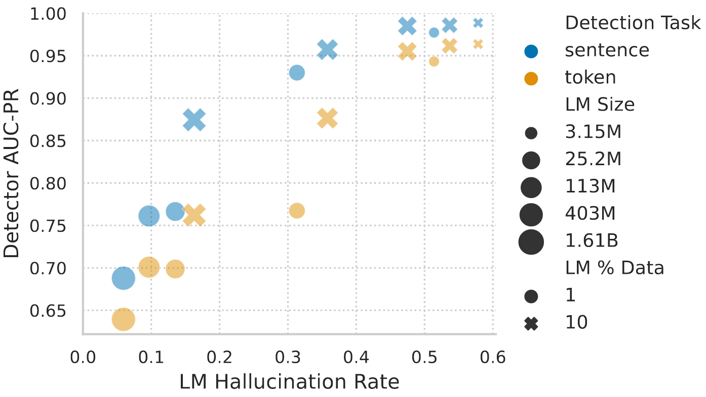
Takeaways
A better understanding and detection of hallucinations will certainly remain a key challenge for research on LMs. The strict control of the training data enables the authors to perform a rigorous investigation of the memorisation capability of language models and its dependency on model scale and training duration, thereby yielding interesting insights into the hallucination rate and detectability. However, it remains an open question how well these results translate into the traditional setting of training LMs on more messy datasets.